500+
Admissions open for 2027–28
Shaping futures.
Inspiring excellence.
A confident start for your child, with a learning community that nurtures curiosity, character, and a lifelong love of learning.
LKG Grade X
Enquire about admission
5,000+ families trust Joshitha School
Learning together at Joshitha School
Quick Facts About
Joshitha School
1,000+
Parents who trust Joshitha School
2 acres
Campus
CBSE
Curriculum
About Joshitha School
A safe place to learn, explore, and grow
At Joshitha School, we provide a safe, secure, and nurturing environment where children can learn, explore, and grow with confidence. Located in a peaceful area away from heavy traffic and pollution, our campus offers spacious indoor and outdoor learning spaces that support academic excellence and physical development.
Our classrooms use digital learning tools, audio-visual resources, and child-friendly Montessori materials to make learning interactive and engaging. We help every child develop creativity, curiosity, communication skills, and a lifelong love of learning.
Our aims & objectives
Helping every student thrive
The values and skills we nurture shape confident learners, caring people, and responsible citizens.
Supportive Social Environment
We provide an environment best suited to each student's social development.
Cognitive & Physical Development
Develop basic mental abilities and skills and to help in the physical growth and proficiency in games.
Leadership & self-confidence
Empowering students to build leadership skills, self-confidence, and self-respect.
Ethics, Relationships & Life Skills
To help learn how to establish good human relationships, imbibe virtues of moral courage, social discipline and to acquire economic understanding.
Holistic Growth & Potential
Nurture well-rounded personalities and help every student bring out their best.
Confident English Speaking
Promote everyday English conversation to build confidence and communication skills.
Owning Actions & Choices
Empower students to take responsibility for their own actions and choices.
Family & School Collaboration
Parents are warmly invited to meet the principal and teachers regularly to discuss academic progress and share valuable suggestions.
How we learn
Academics
Strong foundations for today, and practical skills that prepare students for tomorrow.
01
Build strong foundations
Academic learning
Activity-based learning
Explore concepts through interaction, discovery, and hands-on experiences.
Project-oriented learning
Encourage creativity, research, and collaborative problem-solving.
Real-world application
Connect classroom knowledge to practical situations and everyday life.
Recommended programme
Future-Ready Skills Development Programme
From LKG to Grade X, students will develop creativity, critical thinking, problem-solving, innovation, technological awareness, leadership, and entrepreneurial skills beyond textbook learning.
Design Thinking
Turn curiosity and real-world problems into thoughtful solutions.
STEM
Connect science and mathematics with practical discovery.
AI & Robotics
Build digital, coding, automation, and future-technology skills.
Entrepreneurship
Develop initiative, financial awareness, leadership, and innovation.
These programmes are integrated into practical, age-appropriate, and activity-based learning—not taught as disconnected subjects.
Joshitha Design Thinkers
What is Design Thinking?
Design Thinking helps students identify problems, understand people's needs, create solutions, build prototypes, and improve their ideas through thoughtful exploration.
What is the problem?
Why is this happening?
How can I solve it?
Can I create something useful?
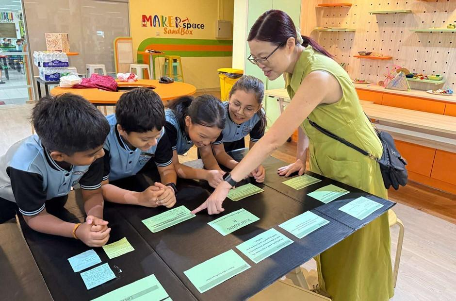
The five-step process
Turning an idea into a useful solution
Empathize
Understand people's needs.
Define
Identify the problem.
Ideate
Think of different solutions.
Prototype
Build a simple model.
Test
Try it and improve it.
Learning by stage
Activities grow with every class
LKG–UKG
Explore & Imagine
Build shapes, identify everyday problems, creative drawing, and sorting activities.
Observation, imagination, creativityGrades I–II
Build Basics
Design a dustbin, make a paper bridge, and create a classroom organizer.
Basic problem-solvingGrades III–V
Collaborate & Create
Design a water-saving model, develop a classroom garden, and create useful products.
Critical thinking and teamworkGrades VI–VIII
Prototype Solutions
Solve real-life school problems, design smart solutions, and build prototypes.
Innovation and analytical thinkingGrades IX–X
Research & Innovate
Complete community projects and develop researched product designs and prototypes.
Advanced problem-solving and innovationDevelops creativity and imagination.
Improves decision-making.
Encourages independent thinking.
Builds confidence to present ideas.
Teaches students to solve real-world problems.
Example project
Reducing water wastage
Students identify water wastage in school washrooms and design a simple, practical water-saving solution.
Joshitha STEM Explorers
Science, Technology, Engineering & Mathematics
STEM connects classroom concepts with practical learning. Instead of only reading about science and mathematics, students experiment, build, observe, and discover how ideas work in the real world.
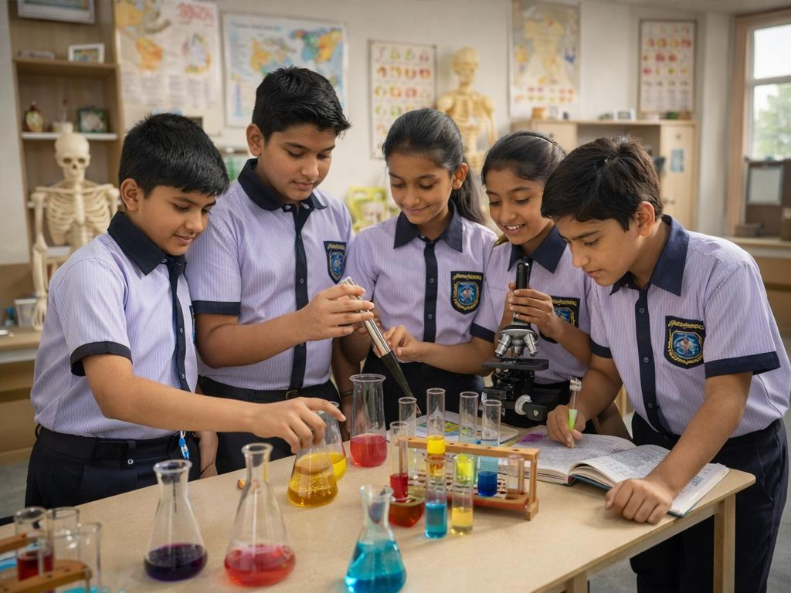
Four STEM components
One connected learning approach
Science
Nature, energy, plants, the human body, environment, and scientific experiments.
Technology
Digital tools, computers, coding foundations, and useful technology applications.
Engineering
Building structures, designing machines, and solving practical construction challenges.
Mathematics
Numbers, patterns, measurements, shapes, calculations, and logical thinking.
Grade-wise implementation
Growing skills at every stage
LKG–UKG
Observe & Explore
Shapes, colours, magnets, floating and sinking, and counting activities.
Curiosity and observationGrades I–II
Try & Discover
Simple experiments, paper towers, plant growth studies, and measurements.
Basic scientific understandingGrades III–V
Build & Apply
Working models, the solar system, water filtration, and simple machines.
Practical applicationGrades VI–VIII
Engineer & Analyse
Electricity circuits, renewable energy, hydraulic models, and engineering challenges.
Engineering and analytical skillsGrades IX–X
Research & Innovate
Advanced science models, electronics, environmental projects, and mathematics applications.
Scientific reasoning and innovationExample project
Working rainwater harvesting model
Students create a working model to understand how rainwater can be collected, stored, filtered, and reused responsibly.
Makes science and mathematics engaging.
Develops logical and analytical thinking.
Improves practical knowledge.
Encourages experimentation.
Prepares students for scientific careers.
Joshitha AI & Robotics Innovators
What is AI & Robotics?
Artificial Intelligence helps computers and machines perform tasks that normally require human intelligence, such as recognizing patterns, understanding language, and making predictions.
Robotics teaches students to design, build, and program machines for specific tasks through gradual, age-appropriate digital, coding, AI, and robotics activities.
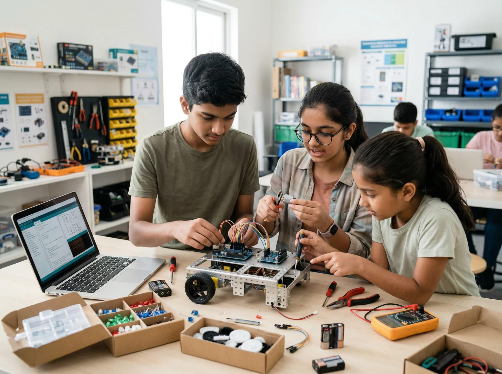
Grade-wise implementation
From playful patterns to intelligent systems
LKG–UKG
Think & Sequence
Sequencing games, logical puzzles, pattern recognition, and interactive digital learning.
Logical thinking and sequencingGrades I–II
Follow & Code
Direction games, unplugged coding activities, and simple robot demonstrations.
Introduction to coding and problem-solvingGrades III–V
Program & Build
ScratchJr or Scratch, block coding, simple robotic kits, and AI awareness.
Basic coding and technology skillsGrades VI–VIII
Connect & Program
Scratch, introductory Python, sensors, motors, robot programming, and AI experiments.
Coding and robotics skillsGrades IX–X
Design & Innovate
Python, AI applications, machine-learning concepts, Arduino, and robotics projects.
Advanced technology awareness and applicationExample projects
Ideas students can build
Smart Dustbin
Use sensors to detect when the bin needs to open.
Obstacle Robot
Design a robot that detects and avoids obstacles.
Automatic Streetlight
Create a model that responds to changing light levels.
Voice-Controlled Project
Use voice commands to control a simple system.
Image Recognition
Explore an AI demonstration that identifies images.
Develops computational thinking.
Introduces future technologies.
Builds coding and programming knowledge.
Improves logical reasoning.
Encourages technology-led problem-solving.
Joshitha Young Entrepreneurs
What is Entrepreneurship?
Entrepreneurship teaches students to identify opportunities, develop ideas, create useful products or services, understand money, and communicate their ideas confidently.
It does not require every student to become a businessperson. It develops confidence, leadership, initiative, creativity, financial awareness, and the ability to turn ideas into action.
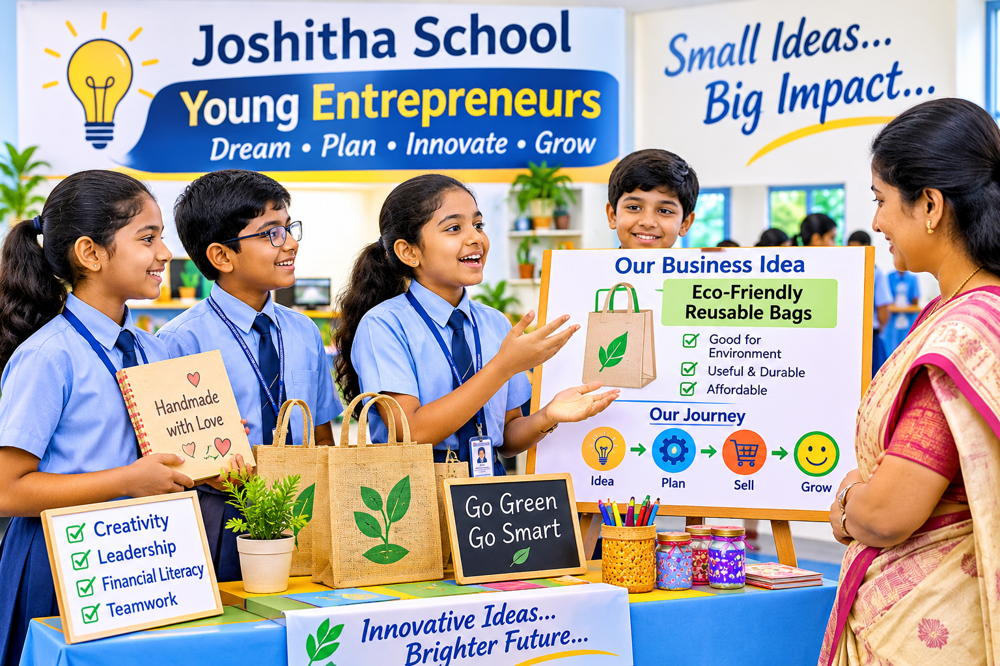
Grade-wise implementation
Learning enterprise step by step
LKG–UKG
Play & Share
Pretend shops, buying and selling games, sharing, and teamwork activities.
Communication and basic money awarenessGrades I–II
Explore & Communicate
Classroom mini-markets, simple product identification, and role-playing.
Confidence and communicationGrades III–V
Create & Price
Handmade product stalls, simple budgeting, pricing, and teamwork.
Financial awareness and creativityGrades VI–VIII
Research & Plan
Develop product ideas, conduct market research, create advertisements, and plan a business.
Leadership and business understandingGrades IX–X
Launch & Present
Student startup projects, business plans, marketing, budgeting, and presentations.
Entrepreneurial mindset and financial literacyExample project
Greeting card mini-business
Make
Cost
Price
Sell
Students prepare handmade greeting cards, calculate material costs, decide a selling price, and organize a school exhibition.
Builds leadership qualities.
Develops communication skills.
Teaches financial literacy.
Encourages teamwork.
Builds confidence and decision-making.
Introduces business and innovation.
Your journey starts here
Admission process
Follow three simple stages to explore Joshitha School and complete your child's admission.
Explore our campus
Infrastructure for every learner
Explore the spaces, resources, and support that help students learn, participate, and feel cared for.
Space to grow
Campus Facilities
A two-acre campus in Janakampet with welcoming spaces for learning, recreation, inclusion, care, and nature.
Learning by doing
Academic Infrastructure
Technology-enabled classrooms and specialist spaces connect ideas with practical discovery, creativity, and communication.
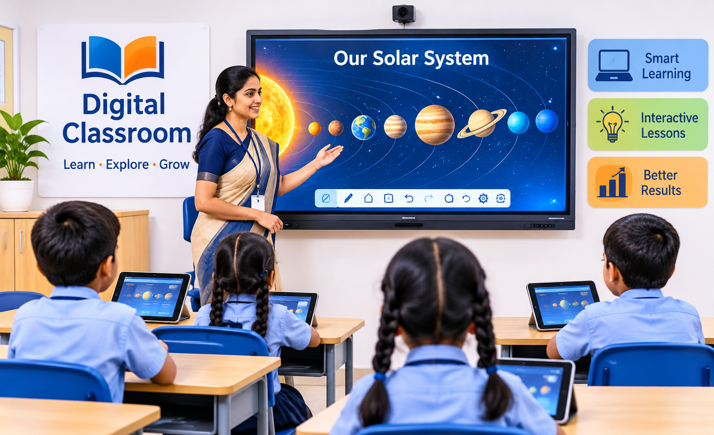
Digital Classrooms
The school has a teaching tool that’s known for its creative, imaginative and innovative approach that make learning engrossing, inspiring and interesting. To make learning proactive and interactive, teachers make use of a Technologically advanced version of Digital boards in Classrooms. These interactive teaching sessions help in enabling better focus and attention to what is being taught in the class, making a dry subject interesting.
Equipped with the latest High-end Smartboards we add more life everyday lessons. Built in tools enhance the teaching – learning process. Textbooks and subject digital content are loaded onto the Smartboard so as to be accessible within the classroom. Smartboard technology caters to different learning styles with students demonstrating increased motivation leading to increased participation in class.
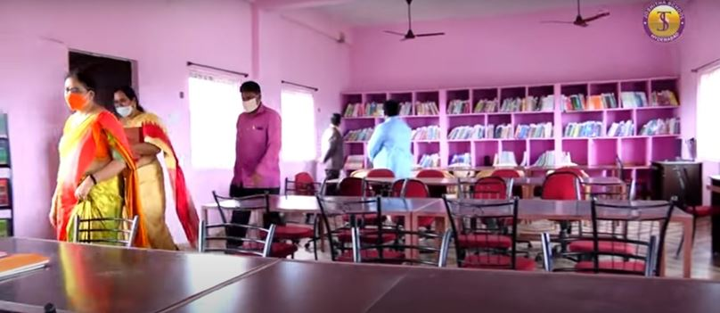
Library
The library plays an integral part in the delivery of the curricular program. It provides supporting material for learning in the classrooms and help(s) teach skills required by the students to become literate(intellectual), informed, and able to face the world.
Our library is equipped with more than 2,000 books from different publishers and offering adequate reading space. The use of latest technologies, ensures smooth flow of processes. Our children are given the opportunity to choose from a range of authors, genres and periodicals.
The books in the library cover a wide range of Subjects, from Fiction, Biographies, Encyclopaedias, Science and Crafts. New Journals and books get added regularly to upgrade the present stocks.
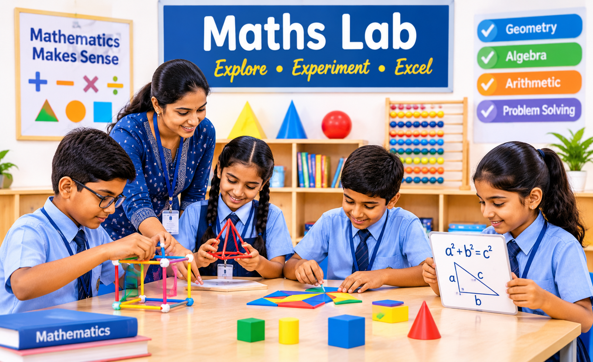
Maths Lab
Math lab helps the students in terms of learning, interest development, confidence development and subject effectiveness. The Math lab curriculum provides an opportunity for students to discover mathematics through doing. Math teachers allow students take interest to understand mathematical facts practically through model, continue work on the tasks and teachers help as and when they are stuck.
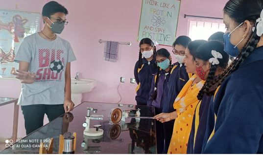
Science Lab
Science is essentially a practical subject which emphasizes on experimental work and learning by doing. Experiments carried in our school laboratories are an integral part of the teaching and learning process of the subject. The students are encouraged to test theories prove concepts and validate hypotheses. It helps students to remember the concepts better.
.jpg)
Physics Lab
The Physics lab allows for a complete practical experience in kinematics to electricity.
Chemistry Lab
From titrations to deducing boiling points, our Chemistry lab is the perfect place for every experiment. We have a range of chemicals used for a variety of experiments and practical work.
Biology Lab
The Biology lab allows students to examine and investigate the wonders of life. With microscopes and specimens (both plant and animal), students can explore, experiment and discover the wonders of nature beyond the classroom.
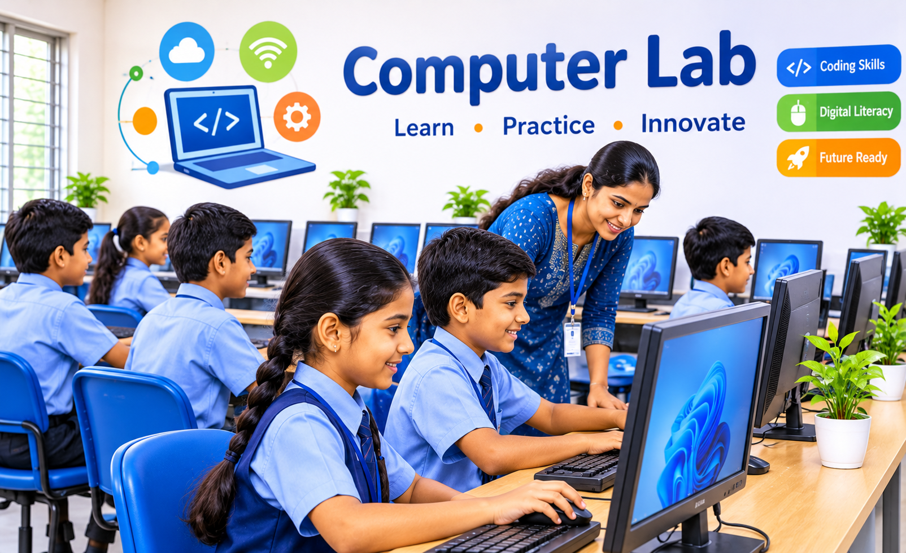
Computer (ICT) Lab
While teaching children the importance of mind power, we train them for the effective use of computers to enhance their performance and to optimize their learning potential. We follow the functional approach in computer training which can enliven the subjects and enable the children to explore the concepts in a virtual environment.
The Campus is well equipped modern computing facilities for more than 30 students and teachers at a time. Our computers are state of the art and include all the necessary software for students to utilize during their classes.
Furthermore, our computers are safe and allow internet access only for educational purposes. In addition, the labs are only used under the strict supervision of a teacher.
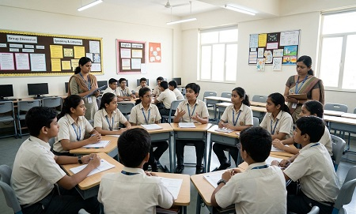
Language (ASL) Lab
Language is a medium of communication. During ASL, the learners are taken through a course wherein listening and speaking are taught as skills in the classroom sessions. To improve the students' use language effectively, expand their vocabulary, and enunciate words, teachers conduct Assessment of Speaking and Listening at regular intervals of time.
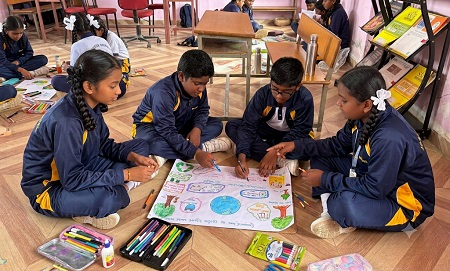
Art & Craft
Art & Craft classes are conducted by experienced faculty in well designed & spacious room. Through this platform, students gain knowledge to create artistic pieces by exploring their creative imaginations.
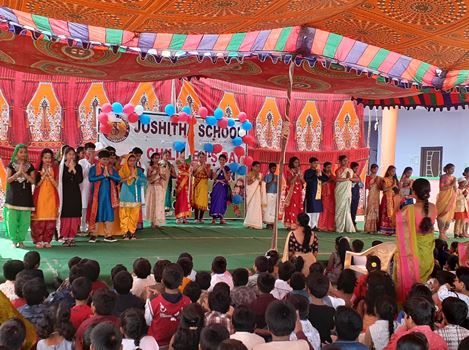
Dance & Music
Music is a vital part of education here at Joshitha and we ensure that students get an opportunity to play and enjoy all forms of music. Our music room includes instruments that students can play during music classes or club classes. The Music room is used as a place for students to practice and play their preferred instruments. Students who choose to be part of the Music Club may also bring their own instruments. Our instruments include a complete drum kit, keyboards, and guitars (both acoustic and electric), among others.
Care you can count on
Safety & Support Services
Safe journeys, continuous monitoring, health support, and emergency readiness help every student feel cared for.
Get in touch
Admission enquiry form
Complete the details below and the Joshitha School admissions team will follow up with you.
Come say hello
Visit or contact Joshitha School
Our team is happy to help with admissions and general enquiries.
School address
Sy.No. 19 to 21 & 73, H.No. 3-51,Jankampet Village & Panchayat,
Near Medical Device Park, Kistareddy Pet,
Ameenpur Mandal, Sangareddy District,
Telangana, India, PIN 502319